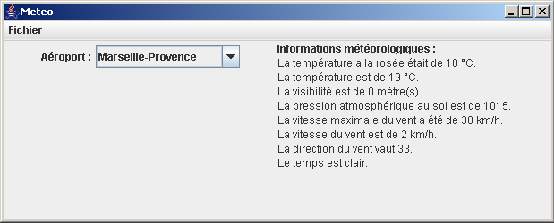

1. Présentation
1.1 Membres du groupe
Notre groupe se compose de quatre membres qui sont les suivants :
- Jérôme Catric
- Clément Le Ny
- Emmanuel Meheut
- Yitian Yang
1.2 Présentation du projet
Ce projet a pour objectif de réaliser l'application station météo, dans le cadre de l'unité d'enseignement INF2104.
Le logiciel météo est une application qui fournit des informations météorologiques sur une région choisie au préalable. Pour cela, elle est à l'écoute de bornes météo, situées dans les aéroports, qui fournissent de l'information météorologique à l'état brut.
Le rôle de cette application est d'exploiter cette information et d'indiquer, pour le lieu choisi, les éléments suivants :
- le temps : Ensoleillé, Peu nuageux, Nuageux, Couvert, Pluvieux;
- la température : définie en degré celsius (°C);
- la pression atmosphérique : définie en hectopascal (hpa);
- la vitesse du vent;
- l'humidité de l'air.
Le maillage des bornes météo étant assez lâche (3 pour la Bretagne à Rennes, Brest et Nantes), les villes proposées par l'application seront repérées par leurs distances aux trois stations météo les plus proches et les données météo affichées seront calculées par interpolation entre les données de ces trois bornes. Les règles d'interpolation ne sont pas les mêmes pour les différents types de données.
2. Diagramme de classe
La figure suivante présente le diagramme de classes (non détaillé) pour le moteur de l'application Météo :

Pour obtenir le diagramme de classe détaillé avec tous les attributs et méthodes des classes cliquer sur le diagramme de classe.
3. Mise en place de environnement de développement
3.1 Structures du CVS
Représentation de la structure globale de notre repository ci-dessous :
| meteo | : répertoire du projet | |||||
| |------- | ant | : répertoire contenant les scripts d'automatisation | ||||
| | | |------- | bin | : dossier contenant les exécutables de ant | |||
| | | |------- | build.xml | : fichier build.xml | |||
| | | |------- | etc | : répertoire contenant les fichiers annexes nécéssaire a ant | |||
| | | `------- | lib | : répertoire contenant les librairies (ant, jdepend, javancss, junit, log4j) | |||
| |------- | build | : répertoire regroupant tous les fichiers générés | ||||
| | | |------- | class | : répertoire contenant les classes Java compilées (bytecode) | |||
| | | `------- | web | : répertoire du site web du projet | |||
| | | |------ | api | : répertoire de la documentation javadoc des classes Java | |||
| | | |------ | controle | : répertoire des rapports de mesures | |||
| | | | | |-------- | jdepend | : répertoire du rapport jdepend | ||
| | | | | `-------- | javancss | : répertoire du rapport javancss | ||
| | | |------ | index.html | : fichier index.html | |||
| | | |------ | : répertoire de rapports en PDF | ||||
| | | |------ | style | : répertoire de styles CSS du site web | |||
| | | `------ | test | : répertoire de rapport de test | |||
| |------- | docsrc | : répertoire de sources des documents rédigés | ||||
| |------- | java | : répertoire des sources en java | ||||
| | | `------- | pgm | : sources de l'application et fichier de test | |||
| |------- | uml | : modèle UML de l'application | ||||
| |------- | ww | : espace de travail développeur | ||||
| `------- | readme | : fichier readme | ||||
3.2 Utilisation de ANT
La mise au point d'un logiciel est souvent constituée de tâches répétitives (compilation, génération javadoc, test...). Afin de faciliter le développement du projet, nous avons décidé d'utiliser ANT qui nous permet d'automatiser les tâches par l'intermédiaire d'un fichier "build.xml".
Ce fichier contient les actions suivantes :
- class : compile les classes java du projet
- clean-class : supprime les classes compilées
- javadoc : génére la JavaDoc
- clean-javadoc : supprime la JavaDoc générée
- javancss : génére le rapport JavaNCSS
- clean-javancss : supprime le rapport JavaNCSS généré
- jdepend : génére le rapport JDepend
- clean-jdepend : supprime le rapport JDepend généré
- junit : génére le rapport de test
- clean-junit : supprime le rapport de test généré
- all : exécute tout
- clean : efface tout ce qui a été généré
- init : créer les répertoires
Voir le code source du fichier.
4. Outils d'optimisation de code
4.1 JavaNCSS
L'outil JavaNCSS nous permet d'analyser la qualité du code Java produit et de calculer les métriques de qualité.
Les principaux métriques sont les suivants :
- nombre de classes
- nombre de package
- nombre de méthodes
- nombre d'instructions sans commentaire
- nombre de commentaires Javadoc par projet, package, classe et méthode.
Cet outil nous offre la possibilité de générer un rapport HTML. Ce dernier nous permet de connaître les différents métriques correspondants a notre code sources et ainsi cela nous permet par exemple, de rajouter des commentaires Javadoc aux endroits que l'on a oublié.
Voir le Rapport JavaNCSS.
4.2 JDepend
L'outil JDepend nous permet d'analyser le code Java produit et calcule les métriques de qualité pour chaque package. JDepend est sensible à l'extensibilité, la réutilisabilité et la maintenabilité des sources. Ce dernier nous montre aussi les dépendances des packages et classes.
Cette outil nous offre la possibilité de générer un rapport HTML à partir duquel on peut avoir accès aux informations suivantes :
- nom du package analysé
- nombre total de classes
- nombre de classes concrètes
- nombre de classes abstraites
- liste des classes abstraites du package
- liste des classes concrètes du package
- liste des dépendances descendantes
- liste des dépendances ascendantes
- Métriques d'analyse de la qualité du code
Voir le Rapport JDepend.
4.3 Log4J
Nous n'avons pas utilisé Log4J, pourquoi ?
Principalement à cause du projet lui-même. Celui-ci n'est pas d'une envergure assez grande pour nécessité l'utilisation de journaux. Il ne s'agit pas non plus d'une application distribuée ou utilisant de multiples thread. Il nous a donc semblé que cela serait plus une perte de temps, malgré certains avantages que nous aurions pu avoir face à "System.out.println()".
De plus, l'outil de débogage intégré dans l'environnement Eclipse, et les jeux de tests nous semblent largement suffisant pour le projet.
Note : Nous aurions pu l'utiliser sur ce projet, car ne connaissant pas spécialement cet outil, cela aurait permis une compréhension facilité si nous devions dans l'avenir l'utiliser dans un projet où il est réellement utile, c'est à dire de moyenne/grande envergure.
5. Evaluation du temps
16h de TP + travail perso
Seul les tâches principales sont évaluées ici :
- Installation de l'environnement et des outils : 6h
- Analyse préliminaire du projet : 6h
- Conception du projet : 20h
- Réalisation des tests : 8h
- Réalisation du rapport : 8h
Evaluation du temps total : 48h
Evaluation du temps total moyen par personne : 12h
6. Organisation du projet
Peu après le lancement du projet et l'analyse de celui-ci à partir des informations fournis (TP 3/4), nous avons établis une répartition du travail pour nous permettre d'accélérer le développement et de donner des objectifs personnels à chacun. La répartition s'est faite en 2 groupes de 2 personnes :
- L'un installant ANT et les outils d'optimisation du code (JavaNCSS et JDepend), ainsi que de JUnit. Ce sont également eux qui ont créé les classes de test.
- Tandis que l'autre groupe s'employait à la réalisation des différentes classes du moteur "météo" ainsi qu'à leurs implémentations.
Enfin, ce rapport à été rédigé conjointement par les deux groupes apportant chacun leurs informations.
7. Bilan du projet
7.1 Conception du projet
Pendant la phase de réalisation, nous nous sommes séparés la création des différentes classes pour nous permettre de travailler séparément et ainsi pourvoir rester le plus indépendant possible.
La séparation s'est faite après avoir identifié les grandes fonctionnalités du programme :
- La partie serveur et ce qui concerne la localisation des villes.
- La partie gérant la création des metars.
- La partie gérant la création des éléments météo.
- Le client du moteur "météo", et la façade du moteur.
Note : Comme il est expliqué dans la partie 6.2, la partie concernant les prévisions (ForeCast) n'a pas été implémentée.
De plus, nous avons appliqués des règles d'écriture de code pour que la relecture par l'un ou par l'autre des membres du groupe puisse se faire sans difficulté. Chacun ayant ses habitudes, nous avons fait de sorte de faire une sorte de charte de codage (non écrite) et de suivre au mieux les les conventions de nommage Java.
De même, à chaque fois qu'un membre implémentait une méthode ou créait une classe, celui-ci se devait de mettre des commentaires Javadoc et des commentaires dans le code, permettant ainsi une meilleur compréhension lors d'une relecture ultérieur par lui-même ou par un autre membre du groupe (facilitant notamment la création des tests). Cela a également permis la génération automatique de la JavaDoc et donc un gain de temps énorme pour la réalisation du rapport final.
7.2 Les tests
Pour les tests nous avons utilisé Junit comme préconisé ce qui a permis un gain de temps. De plus nous avons automatisé le tout dans le fichier "build.xml" de ANT qui génère automatiquement les rapports de test. Cette fonction nous a permis de repérer des problèmes dans le code des classes du projet et de les corriger rapidement.
En priorité, nous avons choisi de coder les classes centrales (Metar notamment) puis avons poursuivi par les autres. Il y a cependant certaine classe que nous n'avons volontairement pas tester comme la classe client qui est surtout graphique et donc qui n'est pas adaptée à ce genre de test.
Voir le Rapport Test.
7.3 Etat final du projet
A la fin de ce projet, nous pouvons dire que les principales fonctionnalités du programme ont bien été implémentées. Le moteur "météo" couplé avec son client est fonctionnel, et nous rend des résultats cohérents. Cependant, nous avons choisis de laisser quelques fonctionnalités de côté par manque de temps et d'informations dans le domaine :
- Il n'y a pas de connexion a un serveur réel, le programme ne peut qu'utiliser le serveur de test qui fournit les metars depuis un fichier. Les mesures n'ont donc rien de réelles et sont juste là pour vérifier le bon fonctionnement du programme.
- Les prévisions complexes (classes ComplexForeCastX), permettant de faire des prévisions sur plusieurs jours par exemple, n'ont pas été implémentées.
Nous pouvons également soulever un point moins important, qui est que certaines données se trouvant dans un metar ne sont pas exploitées. Il s'agit par exemple d'informations sur la précision du temps (effet atmosphérique, brouillard, hauteur des nuages ...).
Ainsi, les informations que nous avons exploitées dans les metars sont :
- La pression atmosphérique.
- La température et la température à la rosée.
- La force du vent, la force maximale du vent et la direction du vent.
- La visibilité.
- Si le temps global est clair.
A l'issue du projet, l'interface graphique du projet météo est composée d'une liste déroulante permettant de sélectionner l'aéroport et d'une boite de texte permettant d'afficher les informations météorologiques de l'aéroport choisi.

Interface graphique de l'application